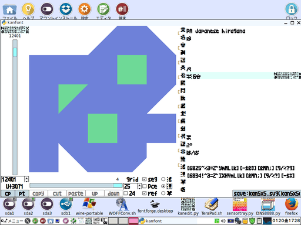

「kanfont」は「LTsv10kanedit(tsvtool10)」を用いたフォントエディタ(グリフエディタ)です。
version(branch):20161215R220253 modify:20161216F035201
目次
⓪-1．インストール(ダウンロード・アンインストール)＆セットアップ
※Pythonは別途インストールされているものとします(Pythonの導入分からない人は「") ⑩-0．「L:Tsv」のＦＡＱ」も参考)。
⑩-0．「L:Tsv」のＦＡＱ」も参考)。
ダウンロードは「https://github.com/ooblog/LTsv10kanedit」にある「Clone or download」ボタンを押すと出る「Download ZIP」メニューをクリック。
インストールは任意(なるだけユーザーディレクトリ内)のフォルダに「LTsv10kanedit-master.zip」を解凍するだけです(「LTsv10kanedit-master」フォルダが作成されるはずです)。
「*.py」のパーミッションがOFFになってたら実行可能に変更、Wineで使う場合は「wine_sh」フォルダ内の「*.sh」のWineパスを適宜修正。
最初に「kanmap.py」を起動(前バージョンの「LTsv/kanpickle.bin」ある場合は一旦削除してから)。「LTsv/kanpickle.bin」を新規作成してください。
「LTsv/kanpickle.bin」を初期化しない場合グリフ座標データが蓄積するまで起動や動作が重くなるか、バージョン(ブランチ)によってはエラーになる場合があります。
詳細は「 ①-0．「kanmap」の使い方(初回起動・表示編)」を参考。
①-0．「kanmap」の使い方(初回起動・表示編)」を参考。
フォント「kan5x5comic.ttf」も用意する場合は「③-0．「kanfont」のＦＡＱ」を参考。
- ooblog/LTsv10kanedit: 「L:Tsv」の読み書きを中心としたモジュール群と漢字入力「kanedit」のPythonによる実装です(準備中)。
- https://github.com/ooblog/LTsv10kanedit
アンインストールはインストール時に作成した「LTsv10kanedit-master」フォルダを削除するだけです。
⓪-2．その他現在わかっている不具合や今後の課題
Python 2.7.6(Tahrpup6.0.5)およびPython3.4.4(Wine1.7.18)で開発しています。Windows,cygwin,darwinなどでの動作は確認しておりません。
フォント(グリフ)「kan5x5comic」は半角と全角の幅の比率が約5:3(1024:624)なのでアスキーアートで問題になる場合があります。グリフ不足で表示できない文字などあります。
私用領域と呼ばれる環境に左右される文字コードを漢直鍵盤の制御に用いてます。「kan5x5comic.ttf」を用意しないとソースが見辛い可能性があります。
人名に使える漢字の異体字を漢字配列「LTsv/kanmap.tsv」から単漢字辞書「LTsv/kanchar.tsv」に移管作業中。なので漢直鍵盤の漢字配列「LTsv/kanmap.tsv」が大幅に変更するかも。
マウスボタンの取得は保留。ホイールの取得は放置。tkk方面は手を出さない予定(コンボボックスなどはGTKのみサポート)。
GTKのコールバックから受けとる構造体を扱う方法が不明のため、GUIイベント経由のPCキーボード取得やファイルダイアログからのキャンセル取得などが不明。
「LTsv/LTsv_doc.py」で安全に再帰する方法思いつくまで置換タグの順序に厳しい手間が。
「docs/」フォルダ内のドキュメントを「docs/kanedit_etc.tsv」ベースで描き直し中。執筆途中状態の関数一覧タグ解説項目あり。
「LTsv/LTsv_doc.tsv」に古いドキュメントが残存。「README.md」作成のサンプルに置き換える予定。
そもそも「kanedit」はまだテキストファイルを編集できる状態にないです(開発中)。
①-0．「kanfont」の使い方

-
左上の漢直鍵盤
-
グリフ編集する漢字などを選択。漢直鍵盤の入力操作は「⑨-2．漢直鍵盤の操作方法」を参考。
-
縦のスケール
-
グリフを編集する文字を選択。漢直鍵盤に無い漢字も選択可能。
-
縦スケールのスピンボックス
-
グリフを編集する文字を選択。縦のスケールと連動。
-
U+ffff表記下の「CP」ボタン
-
クリップボードに縦スケールで選択されてる文字をコピー。
-
U+ffff表記下の「PT」ボタン
-
クリップボードの先頭１文字を使って文字を選択。左上の漢直鍵盤にも反映。
-
真ん中のキャンバス
-
グリフを編集。右回転の青色ポリゴンが描画用途、左回転の緑色ポリゴンがフォントだと反転消去グリフだと背景色消去。
クリックで頂点追加、ドラッグで頂点移動。ドラッグだけど頂点を動かさずクリックを離すと頂点は消える。
線分(長方形じゃなくて円の部分)をクリックで頂点を増やせる。
頂点を全て消すとポリゴンが１枚消える。
-
横のスケール
-
編集するポリゴンの変更。または新規ポリゴンレイヤーを選択。
-
横スケール下の「COPY」ボタン
-
ポリゴンレイヤーを複製。「PASTE」で貼り直す事が可能。クリップボード不使用。
-
横スケール下の「CUT」ボタン
-
ポリゴンレイヤーを削除。「PASTE」で貼り直す事が可能。クリップボード不使用。
-
横スケール下の「PASTE」ボタン
-
「COPY」「CUT」したポリゴンレイヤーを貼り直す。クリップボード不使用。
-
横スケール下の「UP」ボタン
-
ポリゴンレイヤーを重ねる順番を変更。左回転のポリゴンを浮上。
-
横スケール下の「DOWN」ボタン
-
ポリゴンレイヤーを重ねる順番を変更。右回転のポリゴンを沈める。
-
「grid」スピンボックス
-
ポリゴンの頂点位置を揃える。「活(5x)」では100「漫(10x)」では50を想定。
-
「grid」チェックボックス
-
通常OFF。スピンボックスの値より1少ない数値にグリッド指定する事も可能。グリフデザインでは杞憂だった機能。
-
「seg」チェックボックス
-
通常ON。ポリゴンの線分を表示＆操作許可。
-
「Pce(piece)」チェックボックス
-
番号付き頂点を移動するとポリゴン1枚まるごと移動。頂点はキャンバスの外に移動できないので図形が潰れる場合に注意。必要に応じてOFF。Pce=piece。
-
「ref」チェックボックス
-
グリフ編集中に参考までに別のフォントを表示。
-
「活」「漫」「筆」ラジオボタン
-
キャンバスで編集するグリフを「活:kan5x5」「漫:kan5x5comic」「筆:kan5x5brush」から選択。
-
右側の入力欄
-
辞書項目「英名音訓送異俗熙簡繁越地顔鍵代逆非難活漫筆幅」を漢直鍵盤で入力します。クリップボード使用可能。
活漫筆幅がグリフ項目になります。グリフキャンバスで編集。頂点はSVGパスから独自形式に圧縮される場合があります。
テキスト入力欄(電卓)の入力操作は「⑨-3．テキスト入力欄(電卓)の操作方法」を参考。
-
右下の「save」ボタン
-
「kan5x5.svg」「LTsv/kanchar.tsv」「LTsv/kanpickle.bin」に保存します。
②-2．グリフキャンバスの座標とSVGパスの座標の違い＆圧縮形式5x10xの解説
・「kanfont」のグリフキャンバスサイズは512ですがSVGパスの想定サイズは1024です。
・グリフキャンバスは左上が(0,0)ですがSVGパスは左下が(0,0)です。
・そしてSVGパスを単漢字辞書「LTsv/kanchar.tsv」に保存する際に独自形式5x10xで圧縮する場合があります(SVGパスの「M」「z」の代わりに半角角括弧「[」「]」)。
座標圧縮の話と直接関係ないが、「kanfont」はポリゴン限定(直線しか編集できない)ので、SVGパスの読込も「M」と「z」しか対応してないことに注意。
-
「活」用途の5x系(グリフキャンバス上「grid」100px)
-
25分割するので36個のxy座標(0123456789abcdefghijklmnopqrstuvwxyz)で表現する事で圧縮。
-
「漫」用途の10x系(グリフキャンバス上「grid」50px)
-
縦横それぞれ10分割するのでX軸Y軸それぞれ11個のx座標(ABCDEFGHIJK)y座標(OPQRSTUVWXY)で表現する事で圧縮。
実際の「漫」グリフでは25px単位の「grid」も使ってるので圧縮されない場合もあります。
-
「漫」用途の想定20x系(グリフキャンバス上「grid」25px想定)
-
実際には都道府県アイコンが10pxで描画とか「grid」をもっと細かく区切ってるので圧縮予定はありません。
③-0．「kanfont」のＦＡＱ
-
Ｑ．「kanfont」で他のフォントを編集できますか？
-
Ａ．「kanfont」はフォントファイルを読み込めないので「kan5x5comic」のグリフ編集しかできません。
既存のフォントのパスをSVGに変換してtsvを上書きする荒技も考えられますが、現状「kanfont」は曲線を扱えないので普通に読み込めるフォントは皆無かと。
-
Ｑ．「漫」フォント座標が圧縮できない場合がある。
-
Ａ．グリフの「grid」が100または50以外の数値を扱うと圧縮効かなくなります。
圧縮形式5x10xの詳細は「②-2．グリフキャンバスの座標とSVGパスの座標の違い＆圧縮形式5x10xの解説」を参考。
-
Ｑ．圧縮されてない素のSVGを確認したい。
-
Ａ．「save」ボタンで「kan5x5.svg」が保存できるのでそっちで確認できるはず。
-
Ｑ．「kan5x5.svg」は何に使うんですか？
-
Ａ．「kan5x5comic.svg」をFontForgeで「kan5x5comic.ttf」に変換できます。
- FontForge
- http://fontforge.github.io/ja/
-
Ｑ．「FontForge」が使えない環境というかLinux以外のOSだと謎の環境構築が複雑なので簡単な方法お願い。
-
Ａ．「約四文字」(http://ooblog.github.io/)から「kan5x5comic.woff」をダウンロードしてWOFFコンバータで「kan5x5comic.ttf」にする別ルートもあります。
- ふぉんと - 「約四文字」(http://ooblog.github.io/)
- https://ooblog.github.io/%E3%81%B5%E3%81%89%E3%82%93%E3%81%A8.html
- WOFFコンバータ
- http://opentype.jp/woffconv.htm
-
Ｑ．上下左右で漢直鍵盤のカーソルを移動しようとすると別のGUIにフォーカスが移動してしまいます。
-
Ａ．[KANA]+[NFER]などで「σ」鍵盤を表示した状態でHJKLによりカーソルが移動できます。
漢直鍵盤の入力操作は「⑨-2．漢直鍵盤の操作方法」を参考。
テキスト入力欄(電卓)の入力操作は「⑨-3．テキスト入力欄(電卓)の操作方法」を参考。
-
Ｑ．「PT」ボタンで文字を貼り付けたのに漢直鍵盤に反映されない。
-
Ａ．「LTsv/kanmap.tsv」に含まれてない漢字を探索するには「kanedit」の「探」コマンドを用いてください。
例えば都道府県アイコン「」は「kanedit」の「電卓」で「探」すると「探⇔東」が求められます。
-
Ｑ．左回転のポリゴンがフォントに変換したときに描画されてましたよ？
-
Ａ．フォントの描画ルールでは、逆回転のポリゴンが重なった場所が透過になるアルゴリズムだからです。
「L:Tsv」のグリフは単純に順番に描画するアルゴリズムなので「UP」「DOWN」ボタンでポリゴン描画順の入れ替えてください。